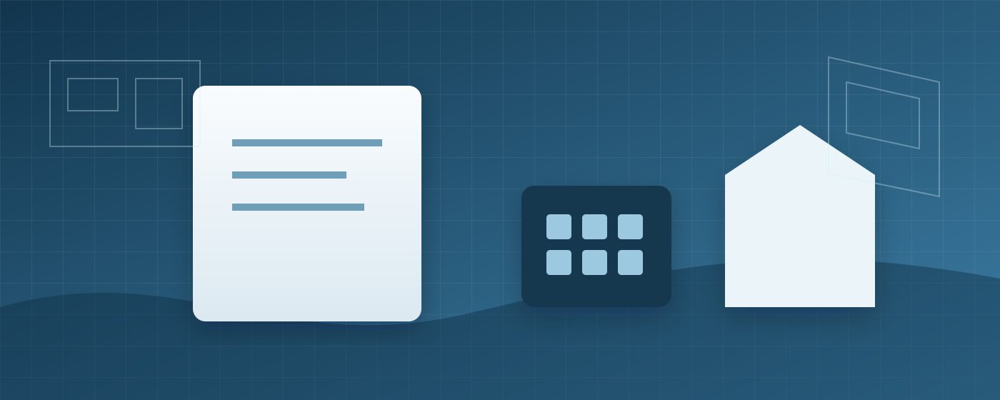

INSS de obra: entenda CNO, Sero, DCTFWeb e a certidão da construção

É comum o proprietário regularizar a construção na Prefeitura, conseguir o documento municipal de conclusão e acreditar que o processo terminou. Quando tenta averbar a área no Registro de Imóveis, descobre uma segunda frente: a regularização da obra perante a Receita Federal. É nessa etapa que aparecem o Cadastro Nacional de Obras, o Sero, a DCTFWeb Aferição de Obras e a certidão da construção.
- confirmar ou fazer a inscrição da obra no Cadastro Nacional de Obras (CNO);
- conferir os dados e realizar a aferição pelo Serviço Eletrônico para Aferição de Obras (Sero);
- concluir e transmitir a DCTFWeb Aferição de Obras;
- regularizar os valores apurados, quando houver;
- emitir a certidão da obra;
- utilizar a documentação na etapa de averbação, conforme a exigência registral.
O que é o Cadastro Nacional de Obras
O Cadastro Nacional de Obras (CNO) é o banco de dados da Receita Federal que reúne informações cadastrais da obra e de seu responsável. Ele é a identificação fiscal da construção dentro desse fluxo. A Receita informa que a inscrição é necessária para cumprir obrigações relacionadas à obra e, ao final, obter a certidão de regularidade fiscal.
Antes de aferir, é importante conferir se endereço, responsável, datas e demais dados cadastrais estão coerentes. Corrigir inconsistências antes de concluir a aferição é mais simples do que descobrir divergências quando a certidão já é necessária para outro procedimento.
O que o Sero efetivamente faz
O Serviço Eletrônico para Aferição de Obras (Sero) é utilizado para aferir as contribuições sociais relacionadas à construção civil. A Receita Federal define a aferição como o procedimento de avaliação das informações da obra para apurar a remuneração da mão de obra e as contribuições correspondentes, conforme a forma de regularização aplicável.
Para pessoa física, a Receita informa que a regularização ocorre por aferição indireta. Para pessoa jurídica, pode existir aferição por contabilidade regular quando atendidos os requisitos, ou aferição indireta em outras situações.
Quais informações influenciam a aferição
A regularização não é simplesmente “área multiplicada por uma alíquota”. O sistema trabalha com dados da obra e informações previstas na legislação e no manual do Sero. Área, destinação, categoria, período, características construtivas, créditos de remuneração e certas notas fiscais podem ter papel no cálculo conforme o caso.
A própria Receita recomenda ter em mãos documentos como alvará e Habite-se ou equivalentes. Também orienta que, em determinadas situações, créditos informados em GFIP ou eSocial e notas fiscais de pré-moldados ou pré-fabricados podem ser considerados dentro das regras do sistema.
O que é a DCTFWeb Aferição de Obras
Ao final do preenchimento, o Sero apresenta a memória de cálculo e gera a DCTFWeb Aferição de Obras. A Receita descreve essa declaração como o instrumento utilizado para confessar os débitos apurados na aferição.
Quando existem valores a recolher, o fluxo permite gerar o DARF. Após a regularização fiscal — pagamento ou situação admitida pela Receita — a certidão da obra pode ser emitida, desde que não existam pendências impeditivas.
CND e CPEND: qual a diferença prática
A página oficial de certidão de obra diferencia os documentos conforme a situação fiscal. A Certidão Negativa de Débitos (CND) é emitida quando não existem pendências no Sero nem débitos impeditivos. Já a Certidão Positiva com Efeitos de Negativa (CPEND) pode ser emitida em situações específicas em que há débito com exigibilidade suspensa ou a vencer, sem pendências que impeçam a certidão.
A Receita informa que CND e CPEND têm o mesmo valor legal para as finalidades indicadas, inclusive averbação, quando emitidas para essa finalidade.
E as obras antigas?
Obras antigas exigem atenção especial às datas. Contribuições tributárias estão sujeitas a regras de decadência, mas isso não significa que basta declarar que a construção é antiga. A comprovação do período pode exigir documentos contemporâneos à obra, e cada situação precisa ser analisada a partir dos registros disponíveis.
Alvarás, Habite-se, cadastro municipal, fotografias, contratos, notas fiscais, contas de consumo, documentos de financiamento e outros registros podem ajudar a formar o histórico. O documento adequado depende do que precisa ser comprovado.
Erros que costumam atrasar a regularização
- cadastrar área ou destinação sem conferir os documentos municipais;
- usar datas aproximadas sem verificar se há comprovação documental;
- concluir a aferição antes de analisar créditos ou documentos aplicáveis;
- confundir certidão da pessoa com certidão específica da obra;
- achar que a regularização municipal automaticamente atualiza a Receita Federal;
- deixar para descobrir o CNO somente quando o Cartório exige a certidão.
Como essa etapa se conecta à matrícula do imóvel
A Receita Federal descreve a certidão de regularidade fiscal de obra como o documento necessário para a averbação da construção no Registro de Imóveis, observadas as regras aplicáveis. Em outras palavras, para muitos proprietários, a etapa federal é a ponte entre a conclusão municipal e a atualização da matrícula.
Tem Habite-se, mas a construção ainda não está averbada?
Vale verificar CNO, histórico da obra, situação no Sero e documentos disponíveis antes de iniciar a aferição.
Leia também
Fontes oficiais
Precisa de engenharia ou arquitetura em Sorocaba e região?
Conte o que está acontecendo no seu imóvel. O primeiro passo é definir corretamente o problema antes de escolher o serviço.